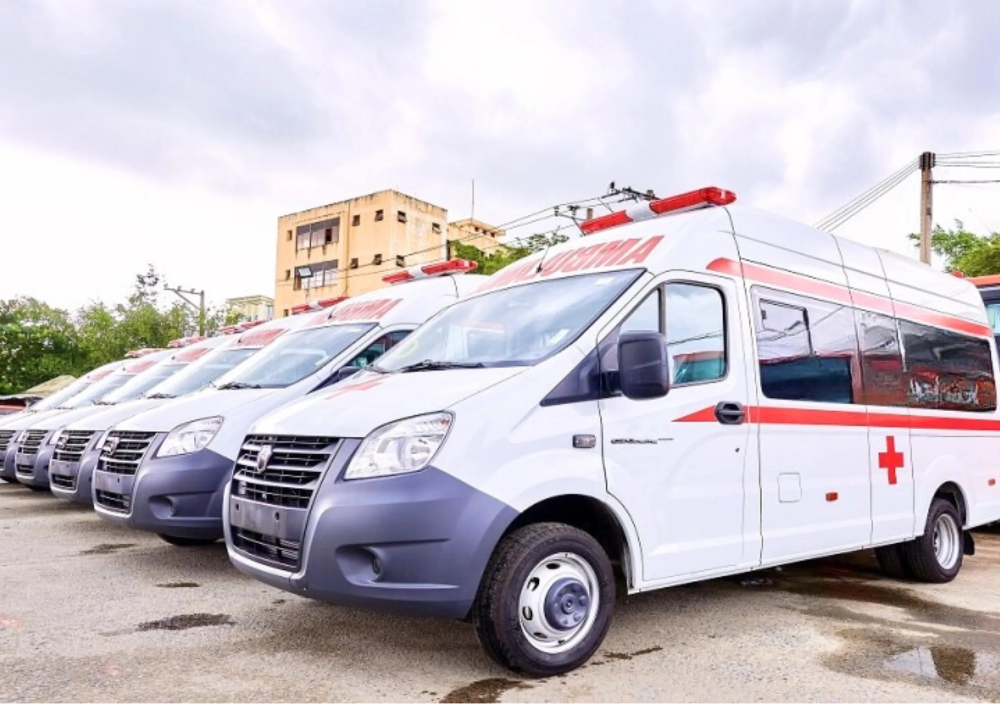
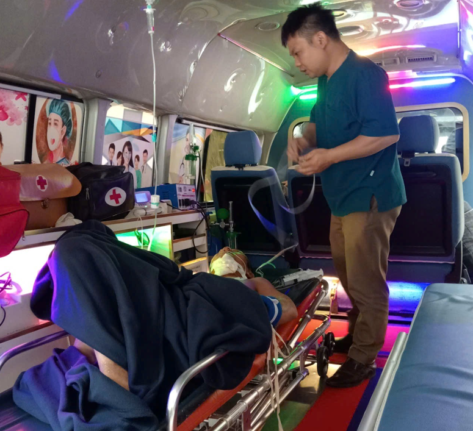
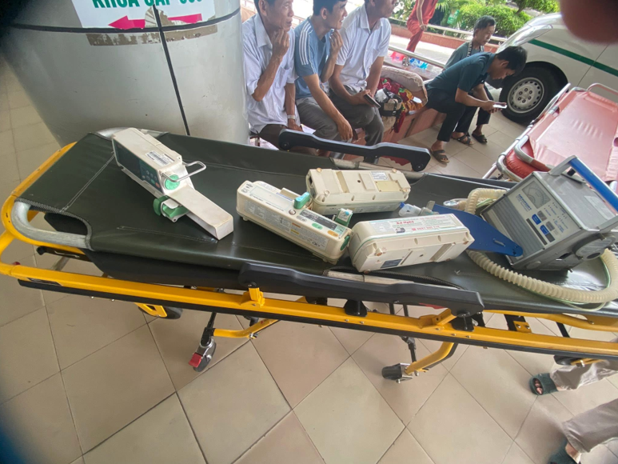
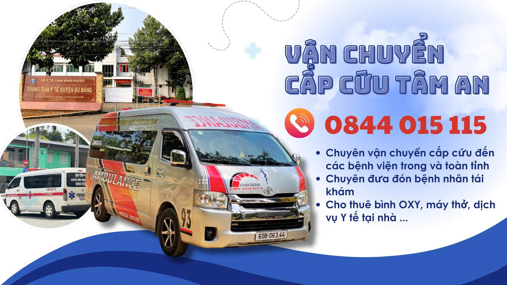

Hỗ Trợ Kịp Thời Khi Cần Thiết - Đội ngũ y tế tận tâm, xe trang bị đầy đủ
bình oxy,
máy thở. Gọi là có mặt ngay!
Mục tiêu là phát triển hệ thống dịch vụ vận chuyển bệnh nhân và hỗ trợ y tế ngoài bệnh viện một cách minh bạch, chuyên nghiệp, phủ khắp các tỉnh thành, để mọi người đều có thể tiếp cận giải pháp phù hợp, kịp thời khi cần thiết.
Đặt sự an tâm của bệnh nhân, người nhà và đối tác lên hàng đầu. Dịch vụ hướng tới cung cấp giải pháp vận chuyển, xe cấp cứu có hỗ trợ thiết bị y tế như bình oxy, máy thở một cách minh bạch, dễ tiếp cận, hỗ trợ khách hàng thuận tiện nhất trong những tình huống cấp bách.

Khi người thân cần xe cấp cứu ở khu vực Bù Đăng và lân cận, chúng tôi luôn sẵn sàng. Đội ngũ chuyên nghiệp, xe cấp cứu hiện đại, phục vụ 24/24. Gọi ngay HOTLINE: 0844.014.115 để nhận sự hỗ trợ kịp thời!

Xe cấp cứu Tâm An có hỗ trợ điều dưỡng, bác sĩ khi cần

Xe cấp cứu 115 trang bị đầy đủ oxy, máy thở, điều dưỡng
• Cung cấp địa chỉ cụ thể, tình trạng bệnh nhân, số điện thoại liên hệ.
• Giữ máy để nhận hướng dẫn sơ
cứu từ tổng đài viên.
• Chỉ gọi số chính thức của bệnh viện để tránh dịch vụ giả mạo.

• Chuyên vận chuyển cấp cứu đến các bệnh viện trong và toàn cả nước.
• Chuyên đưa đón bệnh nhân tái
khám.
• Cho thuê bình OXY, máy thở, dịch vụ Y tế tại nhà…
• Địa chỉ: Đường Lý Thường Kiệt xã Bù Đăng tỉnh Đồng
Nai.
• Thành lập/hoạt động: khoảng từ năm 2005,
đăng ký chính thức năm 2008.
• Loại hình: Đơn vị sự
nghiệp y tế công lập.
• Khám chữa bệnh: khám bệnh, điều trị nội trú và ngoại trú
cho người dân địa phương.
• Y tế dự phòng: phòng chống dịch bệnh, tiêm chủng, kiểm
soát dịch tễ.
• Chăm sóc sức khỏe cộng đồng: quản lý sức khỏe ban đầu,
chương trình y tế quốc gia.
• Hỗ trợ tuyến xã: chỉ đạo chuyên môn cho trạm y tế xã,
Ngành nghề chính của trung tâm được xác định là hoạt động y tế dự phòng.
• Là cơ sở y tế tuyến đầu tại Bù Đăng.
• Phục vụ nhu cầu khám chữa bệnh cơ bản cho người dân, giảm tải
cho bệnh viện tuyến tỉnh.
• Tham gia các chương trình y tế cộng đồng như tiêm chủng, phòng dịch.
Trung tâm nằm ngay khu trung tâm (gần trục Quốc lộ 14), thuận tiện cho người dân trong các khu vực lân cận đến khám chữa bệnh.
Lấy yếu tố an toàn cho bệnh nhân làm ưu tiên hàng đầu trong mọi quy trình.
Chi phí và quy trình dịch vụ rõ ràng, công khai, phù hợp nhiều đối tượng.
Sẵn sàng tiếp nhận yêu cầu hỗ trợ 24/7, phục vụ kịp thời mọi thời điểm.
Đội ngũ chuyên môn, tác phong chuẩn mực, đồng hành chu đáo cùng bệnh nhân.